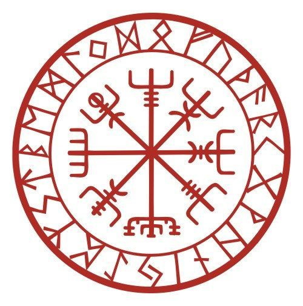

GODS
Ici tu découvriras l'intégralité du panthéon des dieux et déesses nordiques, qu'ils fassent partis des Ases(Aesir), des Vanes(Vaneir) ou même des géants(Rokhr). Ici pas de discrimination tu découvriras les dieux principaux mais également la face sombre de l'Asatrù avec des divinités plus sombres.
RUNES
Ici tu découvriras les Runes sous toutes leurs facettes, que tu sois novice ou confirmé viens parfaire tes connaisssances sur les Runes en étudiant leurs sens, leurs mystères et les différentes utilisations que l'on peut en faire. De la divination à la magie tous les sujets liés aux Runes seront traités.
